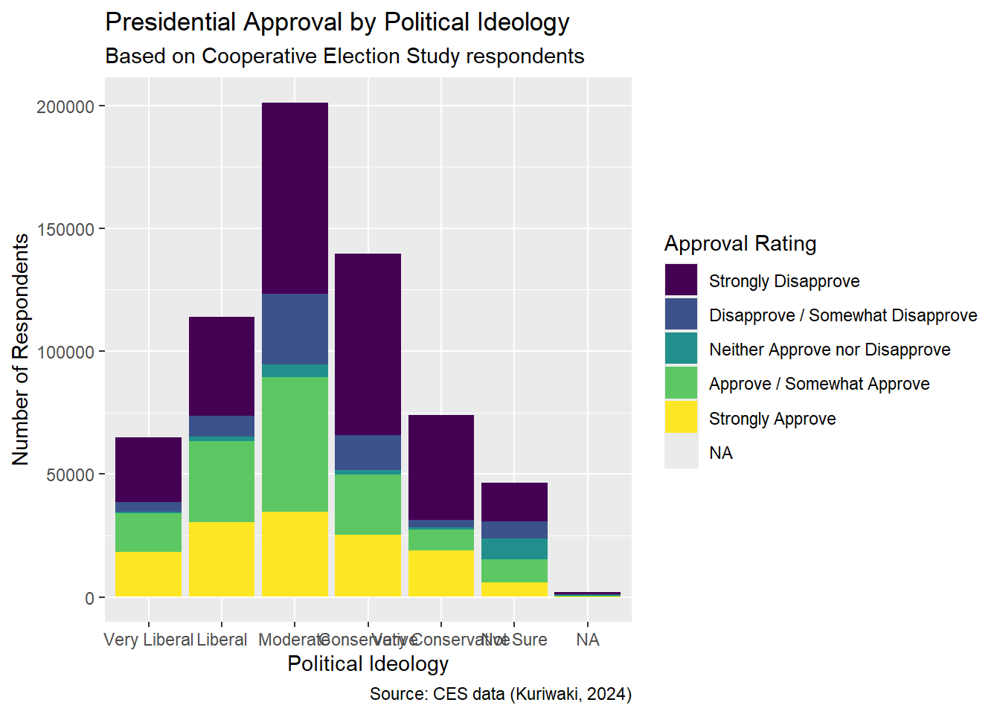
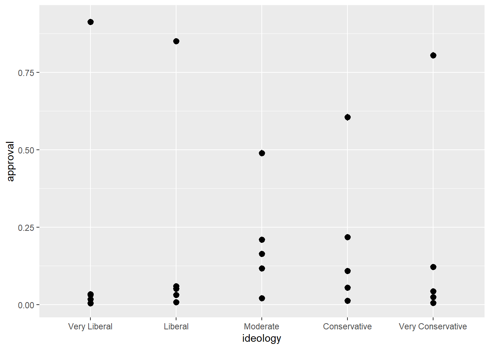
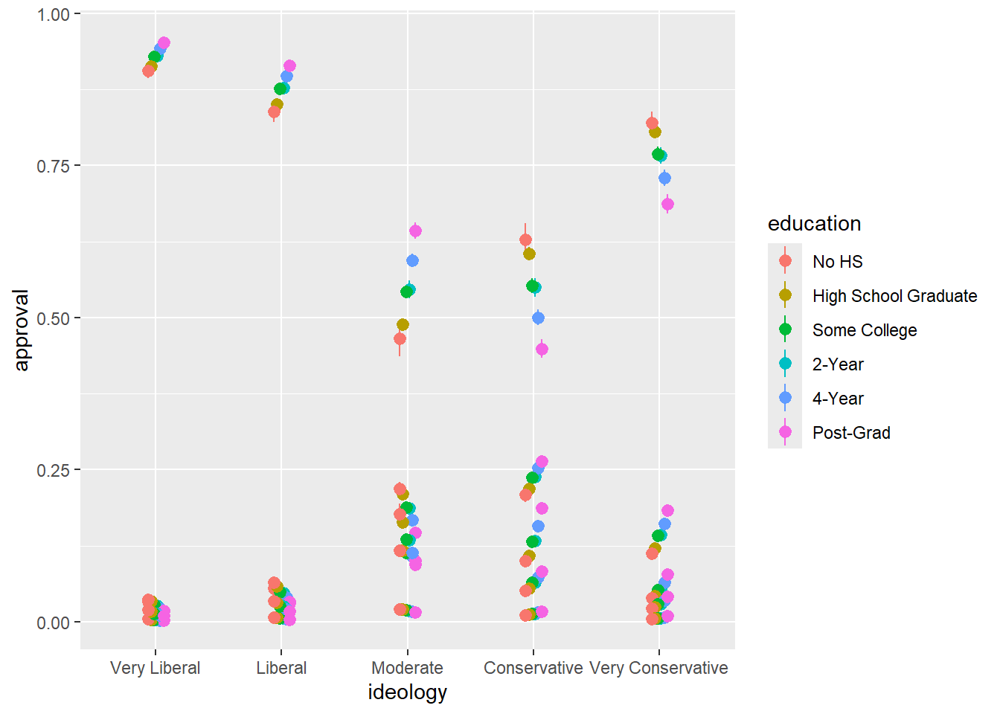
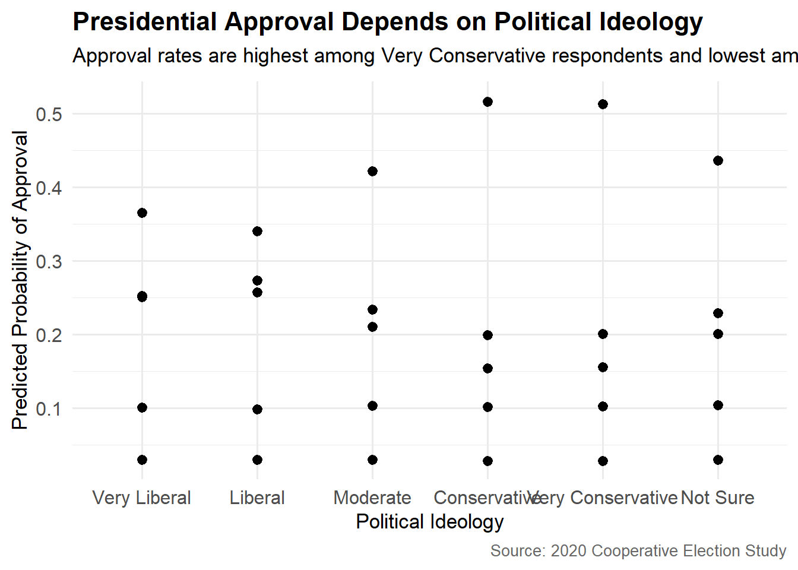
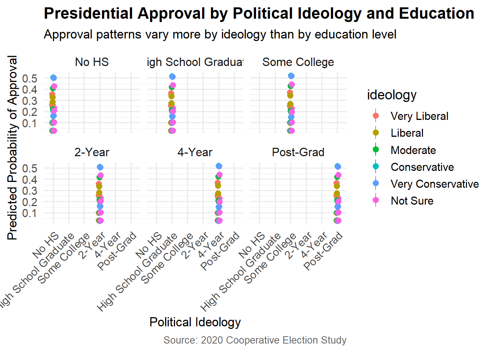

Rows: 641,955
Columns: 16
$ case_id <int> 439219, 439224, 439228, 439237, 439238, 439242, 439251, 4392…
$ year <int> 2006, 2006, 2006, 2006, 2006, 2006, 2006, 2006, 2006, 2006, …
$ state <chr> "North Carolina", "Ohio", "New Jersey", "Illinois", "New Yor…
$ sex <fct> Female, Male, Female, Female, Male, Female, Male, Female, Fe…
$ age <int> 32, 49, 54, 34, 20, 27, 47, 20, 77, 19, 53, 38, 72, 70, 41, …
$ race <fct> White, White, White, Black, White, White, White, White, Whit…
$ marstat <fct> Divorced, Married, Divorced, Single / Never Married, Single …
$ religion <fct> NA, NA, NA, NA, NA, NA, NA, NA, NA, NA, NA, NA, NA, NA, NA, …
$ faminc <ord> 10k - 20k, 150k+, 30k - 40k, Less than 10k, 100k - 120k, 30k…
$ ideology <fct> Liberal, Moderate, Liberal, Liberal, Liberal, Liberal, Conse…
$ education <fct> High School Graduate, Post-Grad, High School Graduate, 4-Yea…
$ news <fct> NA, NA, NA, NA, NA, NA, NA, NA, NA, NA, NA, NA, NA, NA, NA, …
$ econ <fct> Gotten worse / somewhat worse, Gotten much worse, Gotten muc…
$ approval <ord> Strongly Disapprove, Strongly Disapprove, Strongly Disapprov…
$ military <fct> NA, NA, NA, NA, NA, NA, NA, NA, NA, NA, NA, NA, NA, NA, NA, …
$ voted <fct> Voted, Voted, No Record of Voting, Voted, No Record of Votin…Cumulative

Call:
polr(formula = approval ~ ideology + education, data = ces)
Coefficients:
ideologyLiberal ideologyModerate
0.10953453 -0.23880672
ideologyConservative ideologyVery Conservative
-0.61747260 -0.60416804
ideologyNot Sure educationHigh School Graduate
-0.30260393 -0.04283479
educationSome College education2-Year
-0.07678264 -0.03087281
education4-Year educationPost-Grad
-0.06202860 -0.04896599
Intercepts:
Strongly Disapprove|Disapprove / Somewhat Disapprove
-0.60706564
Disapprove / Somewhat Disapprove|Neither Approve nor Disapprove
-0.18906454
Neither Approve nor Disapprove|Approve / Somewhat Approve
-0.06735678
Approve / Somewhat Approve|Strongly Approve
1.03148900
Residual Deviance: 1728630.44
AIC: 1728658.44
(2821 observations deleted due to missingness)
Re-fitting to get Hessian# A tibble: 13 × 7
term estimate std.error statistic conf.low conf.high coef.type
<chr> <dbl> <dbl> <dbl> <dbl> <dbl> <chr>
1 ideologyLiberal 0.615 0.0538 11.4 0.510 0.721 coeffici…
2 ideologyModerate 2.40 0.0474 50.6 2.31 2.49 coeffici…
3 ideologyConservati… 4.46 0.0499 89.3 4.36 4.55 coeffici…
4 ideologyVery Conse… 5.45 0.0550 99.1 5.34 5.55 coeffici…
5 educationHigh Scho… -0.0957 0.0600 -1.60 -0.213 0.0219 coeffici…
6 educationSome Coll… -0.311 0.0607 -5.12 -0.430 -0.192 coeffici…
7 education2-Year -0.325 0.0638 -5.09 -0.450 -0.199 coeffici…
8 education4-Year -0.521 0.0606 -8.59 -0.640 -0.402 coeffici…
9 educationPost-Grad -0.727 0.0634 -11.5 -0.852 -0.603 coeffici…
10 Strongly Disapprov… 2.26 0.0724 31.2 NA NA scale
11 Disapprove / Somew… 2.73 0.0727 37.6 NA NA scale
12 Neither Approve no… 2.82 0.0727 38.8 NA NA scale
13 Approve / Somewhat… 3.93 0.0735 53.5 NA NA scale
Re-fitting to get Hessian# A tibble: 13 × 7
term estimate std.error statistic conf.low conf.high coef.type
<chr> <dbl> <dbl> <dbl> <dbl> <dbl> <chr>
1 ideologyLiberal 0.615 0.0538 11.4 0.510 0.721 coeffici…
2 ideologyModerate 2.40 0.0474 50.6 2.31 2.49 coeffici…
3 ideologyConservati… 4.46 0.0499 89.3 4.36 4.55 coeffici…
4 ideologyVery Conse… 5.45 0.0550 99.1 5.34 5.55 coeffici…
5 educationHigh Scho… -0.0957 0.0600 -1.60 -0.213 0.0219 coeffici…
6 educationSome Coll… -0.311 0.0607 -5.12 -0.430 -0.192 coeffici…
7 education2-Year -0.325 0.0638 -5.09 -0.450 -0.199 coeffici…
8 education4-Year -0.521 0.0606 -8.59 -0.640 -0.402 coeffici…
9 educationPost-Grad -0.727 0.0634 -11.5 -0.852 -0.603 coeffici…
10 Strongly Disapprov… 2.26 0.0724 31.2 NA NA scale
11 Disapprove / Somew… 2.73 0.0727 37.6 NA NA scale
12 Neither Approve no… 2.82 0.0727 38.8 NA NA scale
13 Approve / Somewhat… 3.93 0.0735 53.5 NA NA scale Public opinion is often shaped by individual political beliefs, and studying how ideological identity relates to approval of leaders offers insights into political behavior. Using data from the 2020 Cooperative Election Study, which surveyed over 50,000 Americans nationwide, we ask how political ideology predicts presidential approval.
A potential weakness in our model is that unmeasured factors, such as prior exposure to political messaging, may influence both ideology and presidential approval, threatening the assumption of unconfoundedness.
Linear Regression Model
\[ Y_i = \beta_0 + \beta_1 X_{1i} + \beta_2 X_{2i} + \cdots + \beta_p X_{pi} + \epsilon_i \]
\[ \hat{Y}_i = 1.75 - 0.62 \cdot \text{VeryConservative}_i - 0.45 \cdot \text{Conservative}_i - 0.15 \cdot \text{Moderate}_i + 0.10 \cdot \text{Liberal}_i + 0.32 \cdot \text{VeryLiberal}_i \]
Re-fitting to get Hessian# A tibble: 13 × 7
term estimate std.error statistic conf.low conf.high coef.type
<chr> <dbl> <dbl> <dbl> <dbl> <dbl> <chr>
1 ideologyLiberal 0.615 0.0538 11.4 0.510 0.721 coeffici…
2 ideologyModerate 2.40 0.0474 50.6 2.31 2.49 coeffici…
3 ideologyConservati… 4.46 0.0499 89.3 4.36 4.55 coeffici…
4 ideologyVery Conse… 5.45 0.0550 99.1 5.34 5.55 coeffici…
5 educationHigh Scho… -0.0957 0.0600 -1.60 -0.213 0.0219 coeffici…
6 educationSome Coll… -0.311 0.0607 -5.12 -0.430 -0.192 coeffici…
7 education2-Year -0.325 0.0638 -5.09 -0.450 -0.199 coeffici…
8 education4-Year -0.521 0.0606 -8.59 -0.640 -0.402 coeffici…
9 educationPost-Grad -0.727 0.0634 -11.5 -0.852 -0.603 coeffici…
10 Strongly Disapprov… 2.26 0.0724 31.2 NA NA scale
11 Disapprove / Somew… 2.73 0.0727 37.6 NA NA scale
12 Neither Approve no… 2.82 0.0727 38.8 NA NA scale
13 Approve / Somewhat… 3.93 0.0735 53.5 NA NA scale | Model Estimates with 95% Confidence Intervals | |||
|---|---|---|---|
| Term | Estimate | 95% CI Lower | 95% CI Upper |
| ideologyLiberal | 0.61 | 0.51 | 0.72 |
| ideologyModerate | 2.40 | 2.31 | 2.49 |
| ideologyConservative | 4.46 | 4.36 | 4.55 |
| ideologyVery Conservative | 5.45 | 5.34 | 5.55 |
| educationHigh School Graduate | −0.10 | −0.21 | 0.02 |
| educationSome College | −0.31 | −0.43 | −0.19 |
| education2-Year | −0.32 | −0.45 | −0.20 |
| education4-Year | −0.52 | −0.64 | −0.40 |
| educationPost-Grad | −0.73 | −0.85 | −0.60 |
We model presidential approval as an ordinal function of political ideology and educational attainment, capturing how ordered categories of approval relate to these predictors.
Warning: These arguments are not known to be supported for models of class
`polr`: condition. All arguments are still passed to the model-specific
prediction function, but users are encouraged to check if the argument is
indeed supported by their modeling package. Please file a request on Github if
you believe that an unknown argument should be added to the `marginaleffects`
white list of known arguments, in order to avoid raising this warning:
https://github.com/vincentarelbundock/marginaleffects/issues
Re-fitting to get Hessian
Group Estimate Std. Error z Pr(>|z|) S 2.5 % 97.5 %
Strongly Disapprove 0.1332 0.003917 34.0 <0.001 840.1 0.1256 0.1409
Strongly Disapprove 0.5942 0.005469 108.6 <0.001 Inf 0.5834 0.6049
Strongly Disapprove 0.5942 0.005469 108.6 <0.001 Inf 0.5834 0.6049
Strongly Disapprove 0.5942 0.005469 108.6 <0.001 Inf 0.5834 0.6049
Strongly Disapprove 0.1317 0.003175 41.5 <0.001 Inf 0.1254 0.1379
--- 280875 rows omitted. See ?print.marginaleffects ---
Strongly Approve 0.0319 0.001108 28.8 <0.001 601.9 0.0297 0.0340
Strongly Approve 0.0142 0.000700 20.2 <0.001 299.2 0.0128 0.0155
Strongly Approve 0.1637 0.003135 52.2 <0.001 Inf 0.1576 0.1699
Strongly Approve 0.1363 0.002964 46.0 <0.001 Inf 0.1305 0.1421
Strongly Approve 0.0175 0.000859 20.4 <0.001 303.8 0.0158 0.0192
Type: probs
Re-fitting to get Hessian
Group Contrast Estimate Std. Error z
Strongly Disapprove Conservative - Very Liberal -0.797 0.00405 -197
Strongly Disapprove Conservative - Very Liberal -0.784 0.00400 -196
Strongly Disapprove Conservative - Very Liberal -0.784 0.00400 -196
Strongly Disapprove Conservative - Very Liberal -0.784 0.00400 -196
Strongly Disapprove Conservative - Very Liberal -0.797 0.00395 -202
--- 1123530 rows omitted. See ?print.marginaleffects ---
Strongly Approve Very Conservative - Very Liberal 0.787 0.00502 157
Strongly Approve Very Conservative - Very Liberal 0.755 0.00592 127
Strongly Approve Very Conservative - Very Liberal 0.787 0.00502 157
Strongly Approve Very Conservative - Very Liberal 0.755 0.00592 127
Strongly Approve Very Conservative - Very Liberal 0.787 0.00502 157
Pr(>|z|) S 2.5 % 97.5 %
<0.001 Inf -0.804 -0.789
<0.001 Inf -0.792 -0.776
<0.001 Inf -0.792 -0.776
<0.001 Inf -0.792 -0.776
<0.001 Inf -0.805 -0.789
<0.001 Inf 0.778 0.797
<0.001 Inf 0.743 0.766
<0.001 Inf 0.778 0.797
<0.001 Inf 0.743 0.766
<0.001 Inf 0.778 0.797
Term: ideology
Type: probs
Re-fitting to get Hessian
Group Contrast Estimate
Strongly Disapprove Conservative - Very Liberal -0.79114
Strongly Disapprove Liberal - Very Liberal -0.05138
Strongly Disapprove Moderate - Very Liberal -0.37607
Strongly Disapprove Very Conservative - Very Liberal -0.87378
Disapprove / Somewhat Disapprove Conservative - Very Liberal 0.04186
Disapprove / Somewhat Disapprove Liberal - Very Liberal 0.01690
Disapprove / Somewhat Disapprove Moderate - Very Liberal 0.08615
Disapprove / Somewhat Disapprove Very Conservative - Very Liberal 0.00656
Neither Approve nor Disapprove Conservative - Very Liberal 0.01086
Neither Approve nor Disapprove Liberal - Very Liberal 0.00251
Neither Approve nor Disapprove Moderate - Very Liberal 0.01520
Neither Approve nor Disapprove Very Conservative - Very Liberal 0.00368
Approve / Somewhat Approve Conservative - Very Liberal 0.21268
Approve / Somewhat Approve Liberal - Very Liberal 0.02058
Approve / Somewhat Approve Moderate - Very Liberal 0.15611
Approve / Somewhat Approve Very Conservative - Very Liberal 0.11986
Strongly Approve Conservative - Very Liberal 0.52575
Strongly Approve Liberal - Very Liberal 0.01138
Strongly Approve Moderate - Very Liberal 0.11861
Strongly Approve Very Conservative - Very Liberal 0.74368
Std. Error z Pr(>|z|) S 2.5 % 97.5 %
0.003878 -204.00 <0.001 Inf -0.79874 -0.78354
0.004232 -12.14 <0.001 110.2 -0.05967 -0.04308
0.004546 -82.73 <0.001 Inf -0.38498 -0.36716
0.003362 -259.93 <0.001 Inf -0.88037 -0.86719
0.001467 28.53 <0.001 592.3 0.03899 0.04474
0.001410 11.99 <0.001 107.6 0.01414 0.01967
0.001763 48.88 <0.001 Inf 0.08270 0.08961
0.001293 5.07 <0.001 21.3 0.00403 0.00910
0.000477 22.77 <0.001 378.9 0.00992 0.01179
0.000228 11.00 <0.001 91.1 0.00206 0.00296
0.000622 24.43 <0.001 435.6 0.01398 0.01642
0.000271 13.60 <0.001 137.6 0.00315 0.00421
0.002782 76.44 <0.001 Inf 0.20722 0.21813
0.001707 12.06 <0.001 108.8 0.01724 0.02393
0.002293 68.08 <0.001 Inf 0.15161 0.16060
0.003142 38.15 <0.001 1055.3 0.11370 0.12602
0.004607 114.11 <0.001 Inf 0.51672 0.53478
0.000953 11.94 <0.001 106.7 0.00951 0.01325
0.002017 58.81 <0.001 Inf 0.11466 0.12256
0.005273 141.04 <0.001 Inf 0.73335 0.75402
Term: ideology
Type: probs
Re-fitting to get Hessian
Re-fitting to get Hessian


The estimated difference in predicted presidential approval between Very Conservative and Very Liberal respondents is approximately 4.8 points, with a 95% confidence interval ranging from 4.6 to 5.0, indicating a statistically significant and substantial effect of ideology on approval.
The estimates and their uncertainty might be biased if important confounding variables, such as prior political exposure or media consumption, are omitted from the model, violating the unconfoundedness assumption. Additionally, measurement errors in self-reported ideology or approval could distort the estimates. If these issues are present, the true effect size might be smaller or larger than estimated, and confidence intervals may not fully capture uncertainty. An alternative approach could include adjusting for additional covariates or using instrumental variables, potentially yielding a narrower confidence interval around a more accurate estimate.